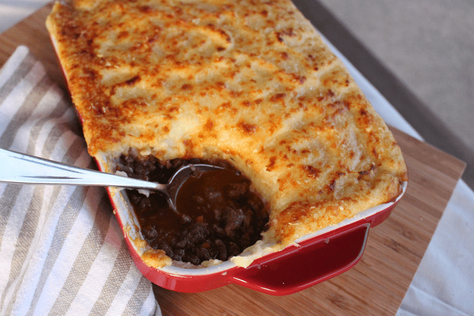

Gordon Ramsay's Shepherd's Pie

Description
An elevated version of British pub fare classic and also one of my favorite comfort dishes of all time, Shepherd's Pie. This is chef Gordon Ramsay's spruced up take however instead of the traditional lamb, which you can still use, I have swapped it for beef which is how I grew up knowing it. Yeah, yeah, I know that is technically "cottage pie" but equally delicious!
Ingredients
- 2 tbsp olive oil
- 2 lbs ground beef
- 1 large onion, grated
- 1 large carrot, grated
- 2 cloves garlic, grated
- 2 tbsp worcestershire sauce
- 1½ tbsp tomato paste
- 2 sprigs of fresh thyme leaves
- 1 sprig fresh rosemary, chopped
- 1 cup red wine
- 1 cup chicken stock
- 2.5 lbs potatoes (peeled and cut into chunks)
- 2 egg yolks
- ¼ cup cream
- 4 tbsp butter
- 6 tbsp parmesan cheese, grated
Instructions
- Preheat the oven to 350°F
- Heat the oil in a large pan until hot.
- Season the ground lamb and fry in the oil over moderate to high heat for 2-3 minutes.
- Stir the onions and carrot into the mince then grate the garlic in as well.
Add the Worcestershire sauce, tomato paste and herbs and cook for 1-2 minutes, stirring constantly.
- Pour in the red wine and reduce until almost completely evaporated.
- Add the chicken stock, bring to the boil and simmer until the sauce has thickened. Add salt and pepper to taste. Meanwhile, cook the potatoes in boiling salted water until tender.
- Drain potatoes and return to the hot pan over low heat to dry out briefly.
- Pass them through a potato ricer then beat in the egg yolks, cream and butter, followed by about 2 tbsp grated Parmesan. Check for seasoning.
- Spoon the lamb mixture into the bottom of an ovenproof dish.
- Using a large spoon, layer the mashed potato generously on top of the lamb mixture, starting from the outside and working your way into the middle.
- Top with remaining parmesan and season.
- Fluff up the mashed potato with a fork to make rough peaks.
- Bake in the oven for approximately 20 minutes, until bubbling and golden brown. (I usually turn on the broiler after and watch the top with the oven door open to ensure a perfectly golden brown crust on top).